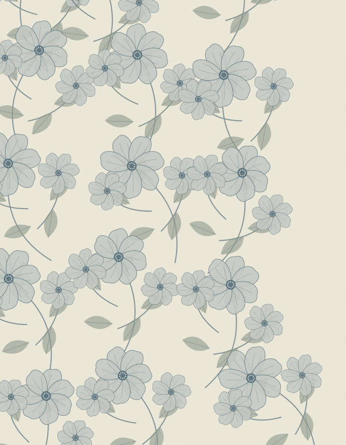

❖ 设计生产工作台
‹ 植物花卉 · 印花探索
PRINT DESIGN STUDIO 01 / BOTANICAL STUDY
原图植物花卉.svg

印花裂变PRINT VARIATIONS
正在解析图案设计点
识别元素、绘画语言、组织关系与配色特征
保留设计点 多选已选 3 项
选择希望延续的特征，其余部分由 AI 重新演绎
裂变模式延续设计关系，开发同系列新图案
变化程度保留设计联系，形成新的视觉表达
➤♧↶↷□⊞Ｔ▧
▦◴⌕ 100%⌄◧▣
拖动图片可调整位置 · 其他工具仅作界面示意